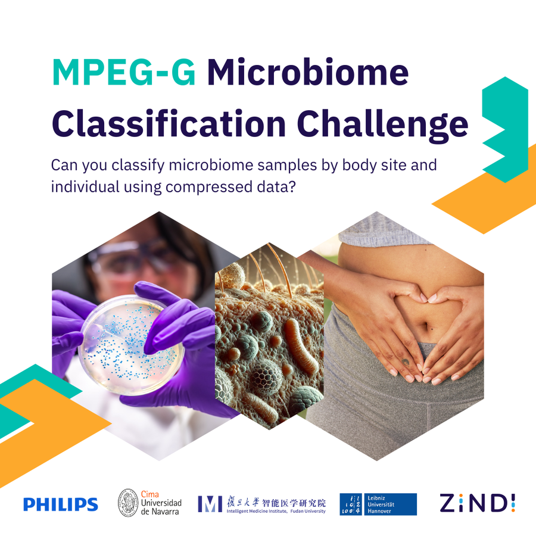

Challenge 1, 20 June to 15 September 2025Microbiome Classification
Can you tell where on the body a microbiome sample came from, using only its sequence profile?
Participants classified samples as stool, oral, skin or nasal from 16S rRNA profiles encoded in MPEG-G. Every team had to submit two models: one centralised, one trained by federated learning, where the model moves between data silos and the raw data never does. In clinical genomics, patient data frequently cannot cross a hospital or a border, so the question of whether federated models can match pooled ones is a practical one.
- 763participants engaged
- 87countries
- 2,369submissions
- 13%women